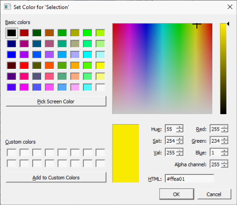

9.3 Display Options Window
(Ask a Question)The Display Options window allows you to customize the layout and the color settings for design elements on the Floorplanner View to meet your personal preferences.
There are three default layers and colors settings group that are provided with Chip Planner:
- System
- Pin_Planner
- Grey_Scale
By default, Chip Planner launches with “System” layers and colors settings group for the Device (Silicon feature) and the Design Elements. These are the System Default Settings.
The following figure shows the color setting for MPF300TS die (PolarFire).
The device color setting is a hierarchical view. You may expand each group to see the lower level items and see the default color setting for each. The device cell types, I/O banks are die-dependent and reflects the available hardware components for the selected die.
Similarly, the color settings for the Design Elements are displayed in a hierarchical view. Expand the group to see the default color setting for each lower level design element.
9.3.1 Changing Color Settings
(Ask a Question)To change the color setting for a device or design element from the default setting:
- Right click the color for the element.
- In the Set Color dialog box, move the Cross across the color spectrum to the color you prefer.
- Click OK.
Figure 9-25. Set Color Dialog Box to Change Color 
9.3.2 Displaying an Instance in the Floorplanner View Using the Display Options Window
(Ask a Question)You can use the check box provided against each menu item to select the elements you want to see in the Floorplanner View.
Some of the options in Display Options window cannot be unchecked, as these options are fixed for any design. Such options have check boxes grayed-out and are always enabled. However, you can still change the colors settings of these options.
Design Option in Display Options windows can be grouped according to Macro Type and State of Macro. The display of design elements in the Floorplanner View depends on both conditions met: the Macro Type and the State of macro. For example, if you want to see 4LUT elements of your design, you need to select both Movable and Placed Macro and 4LUT options.
The following table lists the icons specific to the Display Options window.
| Icon | Name | Function |
|---|---|---|
| Rename Settings | Renames user created layers and colors settings from the default name to a name you specify. | |
| Remove Settings | Removes the user defined Layers and colors settings. | |

|
Clone Settings | Creates a clone of current Layers and Colors Settings. |
9.3.3 Creating Personal Settings
(Ask a Question)You can create your display settings according to your preferences.
-
Create a clone from one of the selected settings (Grey Scale, Pin Planner, System) using Clone Setting icon in the Display Options window.
Figure 9-26. Clone Settings in Display Options Window - Accept the default name “Group #” for the settings name or rename it from the Display Options window.
- Change color settings and/or select items to be displayed from the Display Options window.
The customized settings can be created and preserved on your system and will always be available in the drop-down group list in the Display Options window. The customized settings are available to you across different projects on the same machine.
9.3.4 Selection
(Ask a Question)- To select contiguous items, click the first item you want to select, and then hold down the Shift key and click the last item you want to select. All items between the two are selected automatically.
- To select items that are not contiguous. click the first item. Then hold down the Ctrl key and click each additional item you want to select.
If you selected multiple items and then change your mind about a selected item, you can deselect the item by holding down the Ctrl key and clicking the item.
Selections follow a symmetrical behavior: If you select a port, all macros attached to it are selected as well. Similarly, if you select a pin object, all corresponding macro objects are also selected.
For example, if you select a port, the macro is also shown as selected. However, the property page still points to the port. Pin selection follows the same behavior.
9.3.5 Highlighting
(Ask a Question)The Highlighting option allows you to set persistent colors on designated macros, nets, or both across the system.
When you set a highlight, all selected macros, ports, and/or nets in the design are marked with the selected color. The selected color appears in the left object browser tree. The following figure shows the left Main Object Browser with the logical tree displayed. To select both components, click one component, hold down the Ctrl key and click the other component.

- The left eraser icon removes all highlights.
- The right eraser icon removes highlights only from selected items.
- Use the Highlight check boxes to enable or disable a highlight. Separate check boxes are provided for macros and nets.
- Use the Highlight radio buttons to designate which highlight is active.

Clicking the colored box next to each check box allows you to select a color for that macro or net.
- Show Interior Nets for Selected/Highlighted Macros shows lines that connect two different macros in the group.
- Show Input Nets for Selected/Highlighted Macros shows lines that connect an output port of an exterior macro to one or more input pins in the group.
- Show Driver Nets for Selected/Highlighted Macros shows drivers in the group that connect with an exterior macro.
9.3.5.1 Changing an Option Color
(Ask a Question)- Right click the option under Device Settings.A right click menu similar to the following appears.
Figure 9-31. Right Click Menu - Select an option from the right click menu. The following table describes the options.Note: The Darker and Lighter work well with fully saturated colors, but not for extremes; however, you can use the Set Color dialog box to achieve the desired result. If you apply the Contrast option twice, you will get approximately the same color fully saturated.Tip: You can also change option colors from one active element to another by selecting an active element under Device Settings, and then dragging the colored rectangle to the destination element.
Table 9-11. Options from the Right Click Menu Option Description Edit Color Displays the Set Color dialog box as shown in the following figure. Use this dialog box to choose a color from a set of basic or custom color palettes. Alternatively, you can generate a color value by modifying the hue, saturation, luminosity (HSL) or red, green blue (RGB) color values. Note: Selecting fully or mostly transparent option colors can lead to unexpected results. For example, if you make a color fully transparent, you can have the option selected while rendering the color invisible.Copy Saves the color of the current option. Paste Makes the color of the option the same as the saved color. Reset to Default Resets the values for the selected option. Darken Creates a darker version of the color. Lighten Creates a lighter version of the color. Roll Moves the hue 60 degrees around the hue, saturation, value (HSV) color wheel. Contrast Creates a fully saturated color, with the hue rotated 180 degrees. Figure 9-32. Set Color Dialog Box 
9.3.6 Displaying Routing Views
(Ask a Question)Chip Planner provides the Show Detailed Routing for Selected Nets option to PolarFire and PolarFire SoC users.

9.3.7 Cross Probing
(Ask a Question)When an external application performs a cross probe, the elements colored for cross probing and cross probe nets are always displayed. There are no options that allow cross probing to be disabled or turned off; however, you can change the cross probing color to transparent.
Any additional cross probes get added to the current ones. To clear a cross probe state, use the rightmost eraser icon in the following toolbar.
9.3.8 Removing Custom Setting Group
(Ask a Question)To delete the custom setting group, select the custom setting group and click Remove Setting icon in Display Options window.
9.3.9 Reset to System Default
(Ask a Question)Click Reset <group_name> to Default to reset the group’s settings to the system default settings.
9.3.10 Consolidate Globals
(Ask a Question)When this box is checked, the Row Globals (RGB) are hidden from the Floorplanner View. RGBs do not exist in the user netlist. They are buffers inserted by Libero SoC after layout. When this option is turned on, the RGBs are removed from the display and the Chip Globals are shown as directly driving the macros and cells. This view makes it easy to determine the load of the Chip Globals, without having to track the load from the Chip Globals to the RGBs and then to the macros and cells.
9.3.11 Design Elements in Display Options Window
(Ask a Question)The design elements displayed in the Display Options window are family and die-dependent.